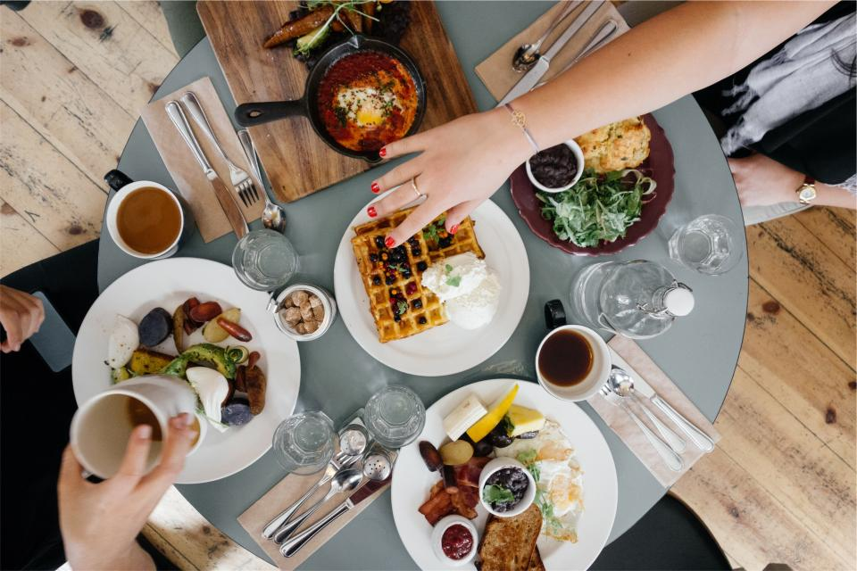
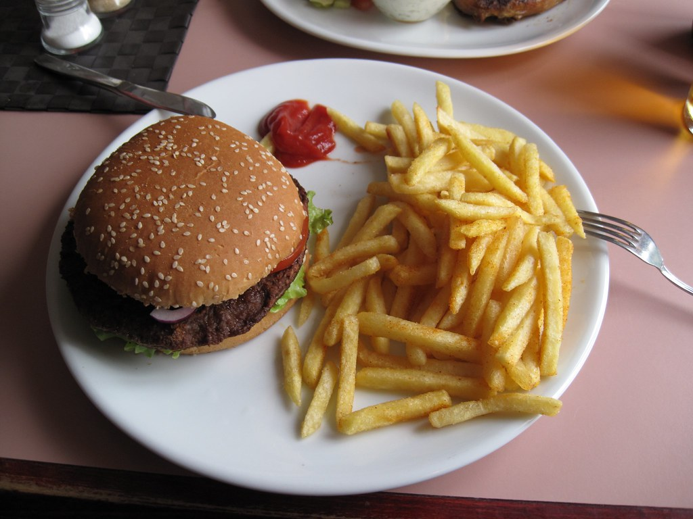

Site Navigation
Places to Eat in Hilton Head Island
There are so many delicious spots in Hilton Head, it's difficult to choose where to eat! However, you can't go wrong with any option.
Breakfast Spots
These restaurants have all your breakfast cravings, from sweet pastries to savory eggs and bacon.

The island's oldest southern style breakfast and lunch restaurant, located in three convenient locations.
This cafe is known for its breakfasts, pastries, soups, and salads, and it's centered in the heart of Harbour Town.
Skillets is a casual family restaurant offering home-style meals with delicious and fresh ingredients.
Lunch Spots
Lunch is underrated. Grab a bite to eat from a fun restaurant, or take it to go!

Frosty Frog has indoor and outdoor seating, "finger-licking good food," and the tastiest frozen drinks.
If you're looking for something on the go, Stu's is the place for you, offering a wide selection of delicious subs.
Enjoy fresh, locally sourced seafood with a waterside view, then hit some of the shops after.
Dinner Spots
Each of these restaurants offer a unique dining experience- satisfaction guarenteed.

With its live music and daily happy hour, this place has both good food and good fun.
Dine on some fresh seafood from this neat, bayside grille!
From hand-cut steaks to baby-back ribs, barbecue doesn't get much better than this.
Credits